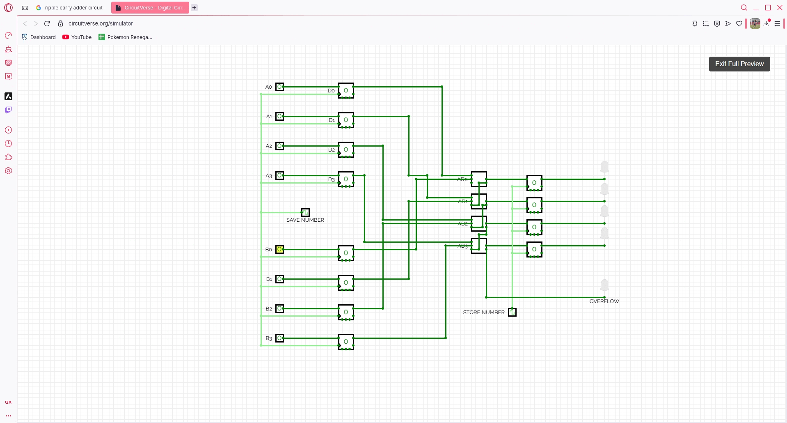
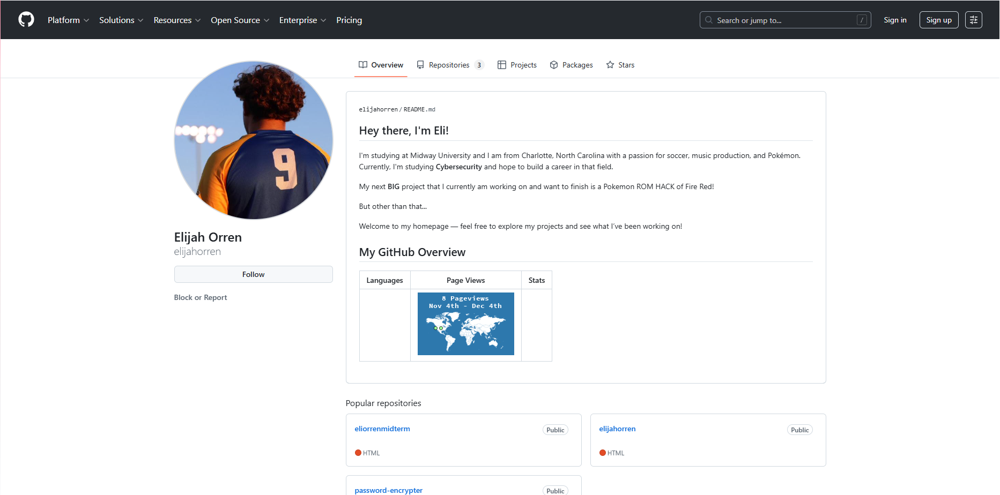
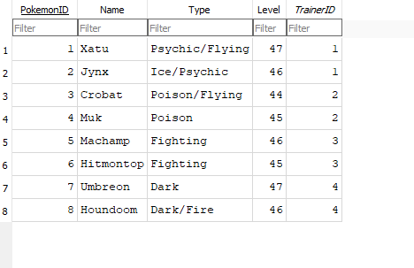
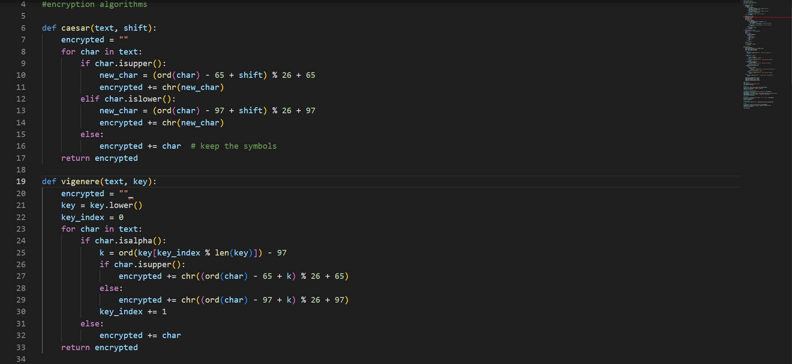
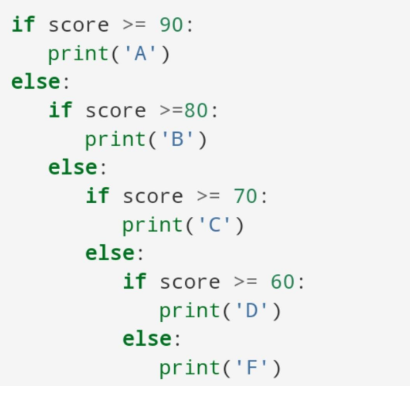

Overview
This class taught us the basics of how computers work and how to code. We learned several languages like Python, SQL, and HTML to create programs, work with data, and build websites. We also covered topics like algorithms, networking, and AI to understand how computers solve problems and communicate. One of the best parts of the class was getting to make projects that helped us practice what we learned. Overall, this course helped us understand both how to write code and how computers work behind the scenes.
Languages and Concepts Learned
Concepts of Computer Processes
Learned the ideas and operations of computing technology, learning how computers run programs and handle information. Showed how different parts of a computer work together to complete tasks efficiently.
Databases & Data Storage
We used SQL to store and search data in databases. Helped understand how to retrieve and work with information.
Python
Learned Python, helping the creation of programs and solving problems by programming.
HTML & CSS
Practiced HTML, showing how to structure and design web pages. Used HTML, CSS, and even JS to layout and style functional websites.
Algorithms
Learned that Algorithms are basically recipes for computers. They're the simple, ordered steps a computer follows to solve any problem—like finding the fastest route or sorting a list of names.
Networking & AI
We learned how computers connect to each other and that AI is the ability of computers to think, learn, and make decisions in ways that imitate human intelligence.
Projects & Creations
Binary Calculator
Binary Calculator using flip-flops.
GitHub CV
GitHub CV to upload projects.
SQL Skills
SQL Projects to learn and introduce Database Skills.
AI & Turing Test
Different types of Machine learning.

Python
Password Encryption Project made from ideas learned.
Algorithms
Example of Python Algorithms we did.
Music Video
Thank You !
If you have any questions or want to learn more about our project, feel free to reach out.